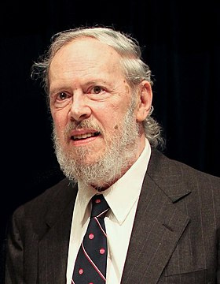

універсальна, процедурна, імперативна мова програмування загального призначення, розроблена у 1972 році Деннісом Рітчі у Bell Telephone Laboratories з метою написання нею операційної системи UNIX. Хоча С і було розроблено для написання системного програмного забезпечення,наразі вона досить часто використовується для написання прикладного програмного забезпечення. С імовірно, є найпопулярнішою у світі мовою програмування за кількістю вже написаного нею програмного забезпечення, доступного під вільними ліцензіями коду та кількості програмістів, котрі її знають. Версії компіляторів для мови С існують для багатьох операційних систем та апаратних архітектур. C здійснила великий вплив на інші мови програмування, особливо на C++, яку спочатку проєктували як розширення для С, а також на Java та C#, які запозичили у С синтаксис.
Початковий етап розробки Сі відбувся у стінах Bell Labs між 1969 та 1973 роками;Деніс Рітчі Деніс Рітчі стверджує, що найбільш творчим був 1972 рік. Мову було названо «Сі» через те, що багато її можливостей було отримано від раніше створеної мови B. Існує чимало легенд щодо походження мови Сі, і пов'язаної з нею операційної системи UNIX, серед них: Розробка Сі стала результатом того, що його майбутні автори любили комп'ютерну гру, схожу на популярну гру Asteroids (Астероїди). Вони вже давно грали у неї на головному сервері компанії, який був недостатньо потужним, і повинен був обслуговувати близько ста користувачів. Томпсон і Рітчі вирішилили, що їм не вистачає контролю над космічним кораблем для того, щоб уникати зіткнень з деякими каменями. Тому вони вирішили перенести гру на вільний PDP-7, що стоїть в офісі. Проте цей комп'ютер не мав операційної системи, що змусило їх її написати. Врешті-решт, вони вирішили перенести цю операційну систему ще й на офісний PDP-11, що було дуже важко, оскільки її код був цілком написаний на асемблері. Було винесено пропозицію використати якусь високорівневу портативну мову, щоб можна було легко переносити ОС з одного комп'ютера на іншій. Мова B, яку вони спершу хотіли використати, виявилася позбавленою функціональності, здатної використовувати нові можливості PDP-11. Тому вони й зупинилися на розробці мови С. Найперший комп'ютер, для якого була спочатку написана UNIX, призначався для створення системи автоматичного заповнення документів. Перша версія UNIX була написана на асемблері. Пізніше для того, щоб переписати цю операційну систему, була розроблена мова С. До 1974 року мова С стала достатньо функціональною для того, щоб переписати на ній більшу частину ядра UNIX, котре спершу було написане на асемблері PDP-11. Це було перше ядро операційної системи реалізоване не на асемблері. K&R C
 Народився в Бронксвілі, Нью-Йорку. Його батько, Алістер Е. Рітчі, був науковим співробітником Bell Labs і співавтором книги «Дизайн комутаційних ланцюгів» з теорії комутаційних ланцюгів. У дитинстві Денніс переїхав з родиною в Самміт, штат Нью-Джерсі, де закінчив середню школу. Навчався в Гарвардському університеті, який закінчив зі ступенями в області фізики та прикладної математики. У 1967 році почав працювати в Науково-дослідному центрі обчислювальних технологій Bell Labs. 1968 року Рітчі захистив докторську дисертацію на тему «Структура програми і обчислювальна складність» в Гарварді під керівництвом Патріка К. Фішера. Однак Рітчі офіційно так і не отримав докторський ступінь, оскільки він не надав переплетену копію своєї дисертації в бібліотеку Гарварда, що є вимогою для отримання ступеня. 2020 року Музей історії комп'ютерів працював з сім'єю Рітчі і сім'єю Фішера і знайшов копію втраченої дисертації.